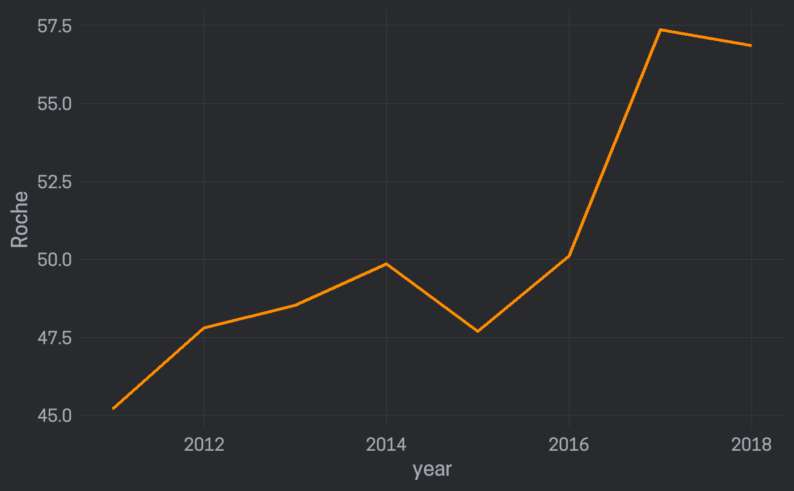
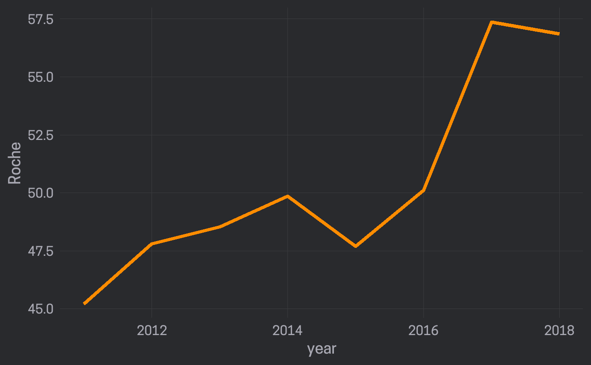
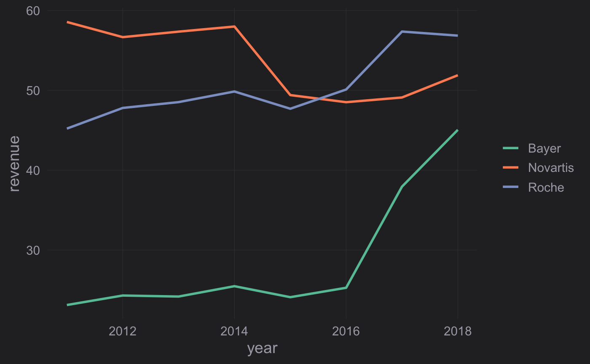
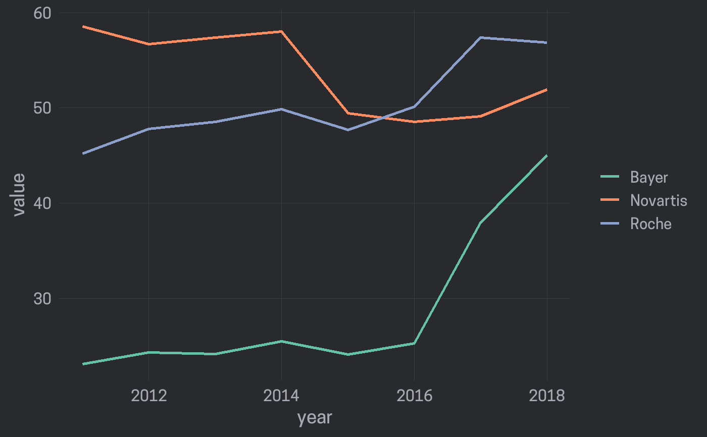
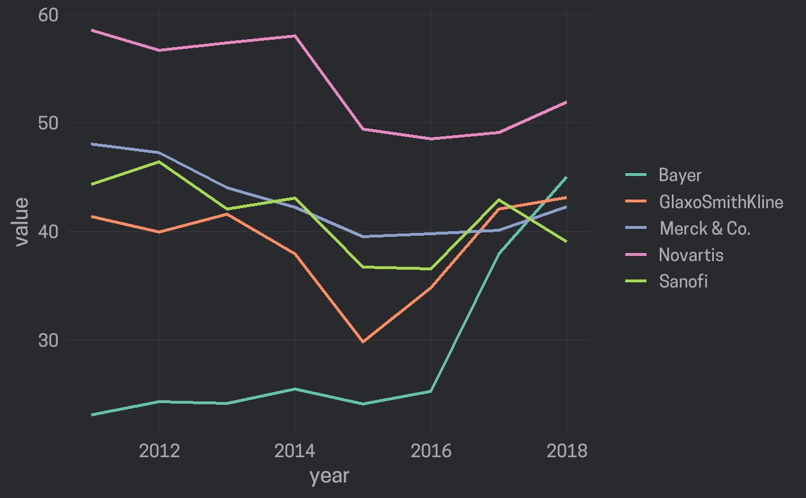
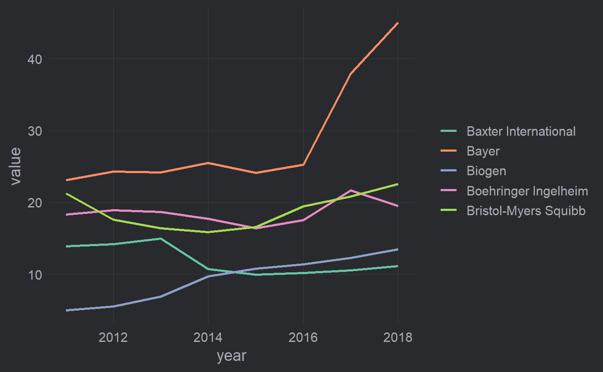

Easily create a line chart
line_chart(data, x, y, group, line_color = "auto", line_size = 1)
Arguments
| data | Dataset used for the line chart |
|---|---|
| x |
|
| y |
|
| group |
|
| line_color |
|
| line_size |
|
Value
An object of class ggplot
Details
For plotting multiple lines line_chart() can handle data in long or wide format.
If the data is in long format pass the variable that identifies individual lines
to the group argument. If the data is in wide format pass a selection of variables
to the y argument.
Examples
library(dplyr)#> #>#> #> #>#> #> #>line_chart(revenue_wide, year, Roche, line_size = 1.5)line_chart(revenue_wide, year, Roche, line_color = "darkorange")## Plot multiple lines (data is in long format) biomedicalrevenue %>% filter(company %in% c("Roche", "Novartis", "Bayer")) %>% line_chart(year, revenue, group = company)## Plot multiple lines (data in wide format, i.e. one column per line) ## Select multiple columns with `c()` line_chart(revenue_wide, year, c(Roche, Novartis, Bayer))## Select all columns from Novartis to Sanofi suing `:` line_chart(revenue_wide, year, Novartis:Sanofi)